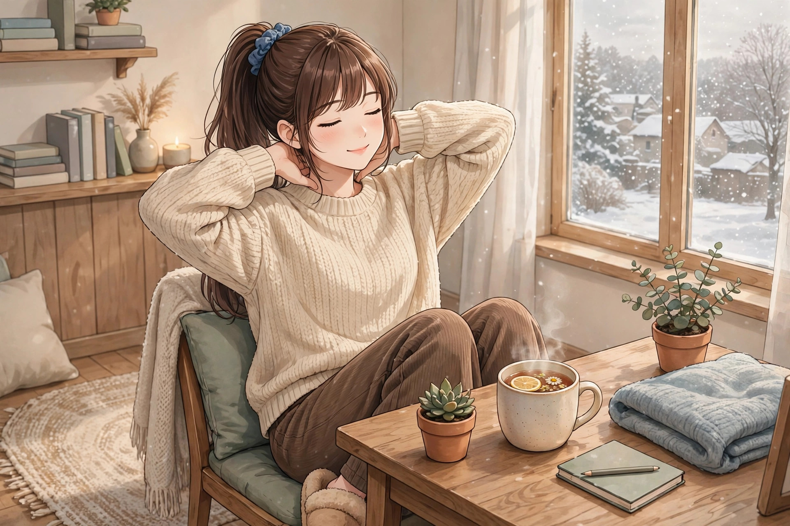

ストレートネックと冬の丸まり姿勢
女性のお悩みコラム 第12回｜ステラポラリス東三国

首が前に出たまま、戻りにくい――冬の縮こまり姿勢と向き合う
「スマホを見ていると、首が前に出ている」「夕方になると首の後ろが重だるい」「コートを着ると、肩が上がったまま下りない」――11月下旬、寒さで体が縮こまるこの時期、首の前のめりが気になる方が増えます。首の骨（頸椎）は本来、ゆるやかなカーブを描いていますが、うつむき姿勢が長く続くとカーブが浅くなり、まっすぐに近づいた状態になることがあります。この状態は「ストレートネック」と呼ばれることがあります。このコラムでは、医学・東洋医学・アロマ・ハーブ・薬膳の5つの視点から、冬の丸まり姿勢と首の仕組みを見つめ、毎日の暮らしに取り入れやすいケアをご紹介します。
医学の視点：頭の重さと、頸椎のカーブのお話
人の頭の重さは、約4〜6kgと言われています。首はその重さを支えながら、上下左右の動きも担っています。頸椎には本来、ゆるやかな前弯（前に向かってゆるやかにカーブする形）があり、頭の重さを分散する働きがあります。スマホやパソコンを見るうつむき姿勢が長く続くと、頭が前に出て、首の後ろの筋肉が引っ張られ続け、カーブが浅くなりやすくなります。頭が前に出るほど、首の筋肉にかかる負担は大きくなると言われています。寒さも関係します。寒いと無意識に肩をすくめ、首をすぼめる姿勢になり、首まわりの筋肉がこわばりやすくなります。医学の視点からの基本は、「同じ姿勢を長く続けないこと」と「首の後ろの筋肉をこまめにゆるめること」です。1時間に一度立ち上がって首をゆっくり回す、スマホを持つ手を目線の高さに近づける、といった小さな工夫の積み重ねが土台になります。
東洋医学の視点：巡りと、首の後ろのライン
東洋医学では、首の後ろから背中にかけては「督脈（とくみゃく）」と「膀胱経（ぼうこうけい）」という気の通り道が走ると考えます。寒さで体が冷えると気血の巡りが滞りやすくなり、首や肩のこわばりを感じやすくなるとされています。首まわりのケアで知られるツボに「風池（ふうち）」があります。後頭部の髪の生え際、首の筋肉の外側のくぼみにあるツボで、首の重だるさを感じたときに、両手の親指でゆっくり押すケアに広く使われてきました。「天柱（てんちゅう）」も、風池の内側、首の太い筋肉の外側にあるツボで、首のこわばりを感じたときに意識されます。寒い日の外出では、首元を冷やさないようにマフラーやタートルネックで覆うことも、東洋医学の考え方では体を守る工夫の一つです。お風呂上がりなど体が温まっている時間帯に、首まわりをゆっくり温めたり、ツボをやさしく押したりすると、心地よく続けやすくなります。
アロマの視点：香りでゆるめる、首筋のひととき
アロマの楽しみは、香りに包まれながら首筋をゆるめる時間を作ることにもあります。ラベンダーの精油は、穏やかな花の香りが特徴で、就寝前のくつろぎ時間によく使われます。ローズマリーの精油はすっきりと清々しい香りで、朝のシャキッとしたい時間や、気分を切り替えたいときに向いています。ペパーミントの精油は、すっとした清涼感のある香りで、首筋の重だるさを感じたときの気分転換によく使われます。手軽な使い方は、キャリアオイル（ホホバオイルやスイートアーモンドオイルなど）小さじ1に精油を1滴混ぜ、手のひらで温めてから首の後ろから肩にかけてやさしくなじませる方法です。力を入れすぎず、なでるようにゆっくり動かすのがポイントです。精油は原液を直接肌につけないこと、妊娠中の方や持病のある方、お薬を使っている方は使用前に専門家へ相談することなど、一般的な注意を守って楽しんでください。
ハーブの視点：温かい一杯で、内側からほぐれる時間
ハーブティーは、温かい飲み物そのものが体を内側から温めてくれる、暮らしに取り入れやすい方法です。カモミールティーは、りんごのような甘い香りが特徴で、夜のくつろぎ時間によく使われます。レモンバームティーは、レモンのような爽やかな香りで、気分をほっとさせたい時間に向いています。ジンジャーティーは、生の生姜を薄くスライスしてお湯を注ぐだけでも作れます。はちみつを少し加えると飲みやすくなります。目安は1日1〜2杯。デスクワークの合間に温かいハーブティーを一杯飲む時間を「首を休ませる時間」と重ねると、姿勢を整える習慣が自然に身につきます。首の後ろに蒸しタオルを当てながらハーブティーを飲むのも、冬のくつろぎ時間として親しまれています。
薬膳の視点：筋肉と巡りを支える食卓
薬膳の考え方では、首や肩のこわばりには「血を養う食材」と「筋肉を支える食材」が向いているとされています。血を養う食材の代表は、黒ごま・ほうれん草・にんじん・なつめなどです。黒ごまは、ご飯にふりかけたり、すりごまにして和え物に加えたりと、毎日の食卓に取り入れやすくなります。筋肉を支える食材としては、鶏肉・鮭・卵・大豆製品などが挙げられます。冬の食卓では、鶏肉と根菜のスープや、鮭のホイル焼きといった、体を内側から温めるおかずを一品増やすのがおすすめです。寒い時期は、冷たい飲み物の飲みすぎで体を冷やしやすいため、温かいものを中心にするのが薬膳の考え方です。よく噛んでゆっくり食べることも、首や肩の力を抜く時間につながります。
セルフケアのポイント
- 顎を引く運動：1日2〜3回、顎を軽く引いて5秒キープする動きを5回ほど。首の後ろが伸びる感覚を確かめながら、無理のない範囲で行いましょう。
- 首のストレッチ：1日2〜3回、首を左右にゆっくり倒して15秒キープ、前後にゆっくり倒して15秒キープ。反動をつけず、息を吐きながら行いましょう。
- 肩甲骨まわし：1日2〜3回、両肩を大きく前後に10回ずつ回す。デスクワークの合間や、家事の合間に取り入れましょう。
- 壁立ちチェック：週2〜3回、壁にかかと・お尻・肩・後頭部をつけて立つ。後頭部が壁につきにくいときは、首が前に出ているサインの一つです。
- 枕の高さの見直し：仰向けに寝たとき、顎が上がりすぎず下がりすぎない高さが目安です。バスタオルを折って高さを調整する方法もあります。週1回を目安に、寝起きの首の重だるさを確かめましょう。
当サロンでのケア
ストレートネックや冬の丸まり姿勢が気になる方には、首まわりから全身の姿勢を整えるケアが向いています。当サロンでは、首から肩甲骨まわりをゆるめるケアと、全身をオイルでゆるめるアロマオイルマッサージ、姿勢の土台を整える美容整体を組み合わせ、施術のあとに「首が軽くなった」「背筋が伸びた感じがする」と感じやすい状態を目指します。首や姿勢と関わりの深いお悩みページもあわせてご覧ください。
受診の目安
首の重だるさの多くは姿勢や生活習慣によるものですが、中には医療機関への相談が向いている場合もあります。手や腕にしびれがある、箸やペンを持つ手に力が入りにくい、歩くときにふらつく、首の痛みが数週間以上続く、激しい頭痛や吐き気を伴う、といった場合は早めに医療機関へご相談ください。気になる症状が続くときは、施術の前に医療機関でご相談いただくことをおすすめします。
施術者について
平賀建人（施術歴30年）
鍼灸師・登録販売者・アロマセラピスト・パーソナルトレーナーの資格を持ち、美容整体を中心に、アロマオイルマッサージ、もみほぐしを、その日の状態とご希望に合わせて組み合わせて施術します。このコラムは、施術者の知識と経験をもとに作成しています。
この記事で紹介したケアに使えるもの
PR（アフィリエイト広告を含みます）

スキマ時間ストレッチ 脊柱編：腰・背中・心もスッキリ！姿勢改善と筋膜ケアでダイエットにも効く実践本（山下健造、理学療法出版）
理学療法士が、頸椎・胸椎・腰椎の仕組みと、1日3分でできるスキマ時間ストレッチを図解で紹介した一冊です。記事の医学の視点やセルフケアのポイントの参考に。
DoubletFamily ネックストレッチピロー ネックピロー 首枕 首 ストレッチ 10分寝るだけ 首筋を伸ばす
1日10分ほど寝るだけで、首筋を伸ばす時間を作れるネックストレッチピローです。ウレタンゴム素材のクッション形状で、首元に当てて使います。記事のセルフケアのポイントでご紹介した、首のストレッチの習慣づくりに。